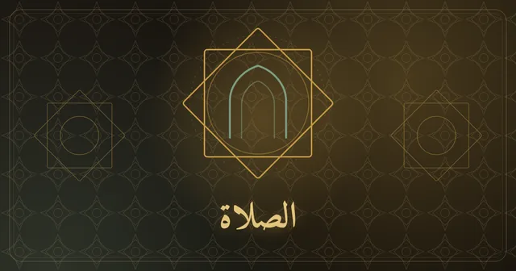

The Quran Online Tarteel Blog
Practical guides for parents, children and sisters learning the Quran: reading, Tajweed, Hifz, duas, salah and Ramadan, written by an academy that teaches in English, Urdu and Arabic.
Latest Articles on Learning the Quran

How to Learn Quran Online: A Step-by-Step Guide for Beginners
The right order to learn, how long each stage takes, what a good online class looks like and how to start this week, for children and adults.

Tajweed Rules for Beginners
The main rules of Tajweed explained simply: noon sakinah, meem sakinah, ghunnah, qalqalah and madd.

Noorani Qaida Guide: Lessons, Order and Tips
What each stage of the Noorani Qaida teaches, how long it takes and how parents can help at home.

How Many Rakats in Each Prayer?
A simple chart of the fard rakats of Fajr, Dhuhr, Asr, Maghrib and Isha, for kids and new learners.
Ready to Learn the Quran Properly?
Articles help, but recitation is learned by listening and being corrected. Our female teachers teach online Quran classes for kids, Quran classes for women, Noorani Qaida, Tajweed and the Hifz program, live and one to one.
Book 2 Free Classes